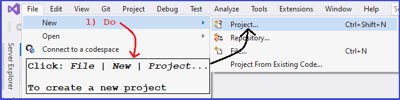

The screenshots below show the steps for creating what is known as a static library. All of the .cpp files in the Wrapper folder remain the same for each of our programming assignments. Rather than compiling them each time we start up a new project, we can compile them once and put their code into a static library. Then when we create a new project, we will modify the new project's linker settings to get the Wrapper .o code from this static library. The screenshot (to the right) of the Wrapper folder shows results of creating two static libraries:
|
